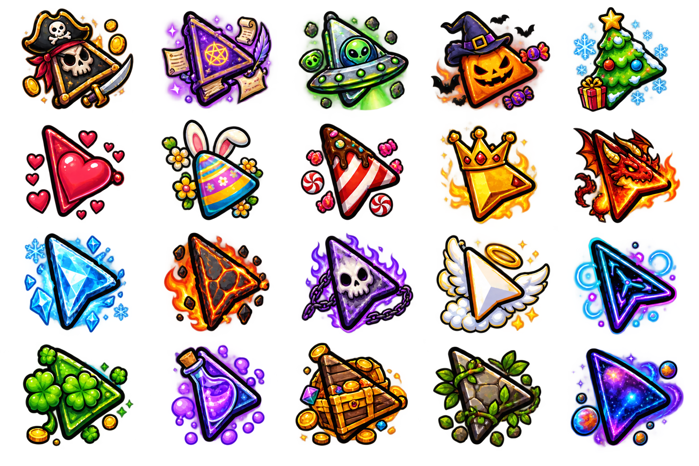

40 DESIGNS · DEINE GRÖSSE · DEIN LOOK
Dein Cursor.
Dein Style.
Mach aus dem langweiligen Standardpfeil etwas Besonderes. Wähle aus zwei Sammlungen voller bunter, magischer und galaktischer Cursor und passe die Größe an.
Windows-App · kostenloses Quellpaket · 40 enthaltene Designs

Eine kleine Vorschau aus der Cursor-Sammlung ✦Finde deinen Cursor
Wähle ein Design aus der Galerie aus.
Bunte Cursor 01
In der Desktop-App kannst du dieses Design auswählen und als Windows-Cursor übernehmen.
Größe in der App einstellbar
72 px
App herunterladen01 / DOWNLOAD
App herunterladen
Lade das Windows-Paket herunter und entpacke die ZIP-Datei.
02 / STARTEN
Cursor Studio starten
Die README erklärt den Start und wie du die Windows-EXE auf deinem PC erstellen kannst.
03 / ANPASSEN
Design übernehmen
Wähle ein Motiv, stelle die Größe ein und wende deinen Cursor an. Du kannst jederzeit zum Windows-Standard zurückkehren.